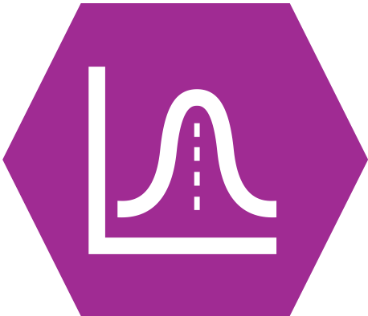
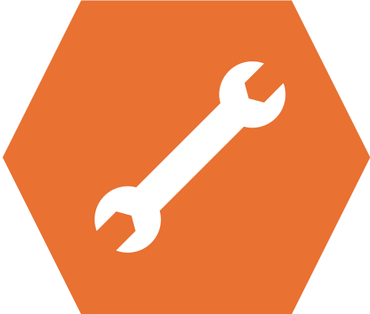
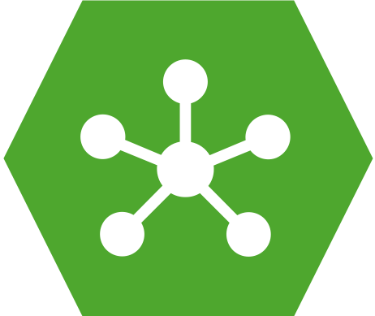
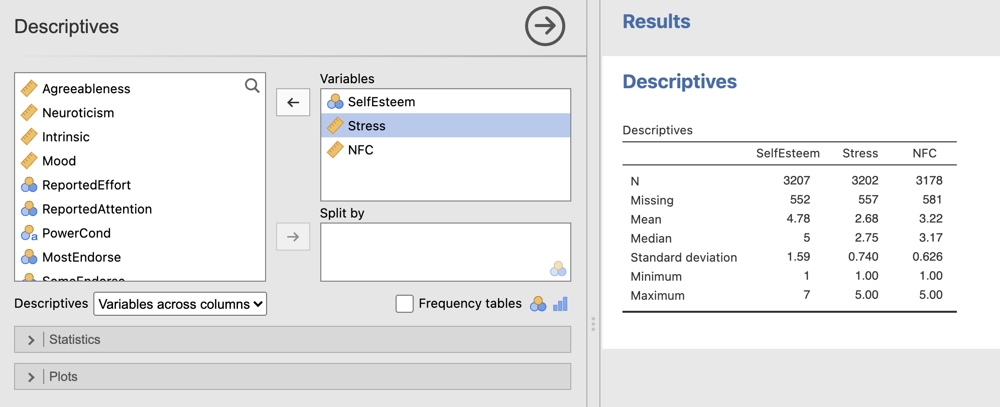

Week 1 : Descriptive Statistics, Data Processing and R
This week we will explore how to use Jamovi to compute and visualise descriptive statistics from a dataset. This will include some revision on Jamovi from last semester and an introduction on how we can use the R coding language to simplify complex data processing.
|  | Quantitative Methods |
|---|---|
| Measures of central tendency | |
| Measures of dispersion and spread | |
| Measures of skew and normality | |
| Creating histograms and recognising different types of distribution |
|  | Data Skills |
|---|---|
| Computing descriptive statistics in Jamovi | |
| Working with the Rj editor to use R code within Jamovi | |
| Learn the basics about functions and variables in R | |
| Computing descriptive statistics using R |
|  | Open Science |
|---|---|
| Working with openly available research data |
The Dataset
We will be exploring data that was collected as part of the ‘Many Labs 3’ project (Ebersole et al., 2016). This collected data from university students in the USA across a wide range of cognitive, behavioural and demographic measures. We will be exploring a subset of this dataset concerning individual differences in personality measures. The experimenters collected data to compute the ‘Big Five’ personality factors from each participant. Wikipedia describes the factors as:
- Conscientiousness (efficient/organized vs. extravagant/careless)
- Agreeableness (friendly/compassionate vs. critical/rational)
- Neuroticism (sensitive/nervous vs. resilient/confident)
- Openness to experience (inventive/curious vs. consistent/cautious)
- Extraversion (outgoing/energetic vs. solitary/reserved)
This is a very simple (Gosling et al., 2003) and influential model that is used to summarise personality differences. Though it is popular, some researchers have criticised big five factors for conceptual and methodological reasons (Block, 1995). Read around and form your own view!
The data contains the average of two questions about each factor in which participants responded to questions using a scale from 1 to 7. A value of 1 indicates a low score and a value of 7 is a high score. For example, someone with an extraversion score of 2 is more introverted that someone with an extraversion score of 5.
The Challenge
We have data from a sample of students in a big data table. This raw data needs to be summarised and visualised so that we can turn this massive block of numbers into something intuitive.
By computing a range of key features from the data we can generate a concise overview of the main characteristics of the data.
Try your best with this question and don’t forget to speak with your tutor if you get stuck!
You have reproduced the descriptive statistics for the big 5 personality factors. Now you can do the same for some of the other factors in Table 2 of section 3.5 in Ebersole et al. (2016).
Specifically - try and compute the mean and standard deviations for:
- Self Esteem (see section 3.5.1 for details)
- Perceived Stress (see section 3.5.4)
- Need for cognition (see section 3.5.5) Can you find variables (columns) that correspond to these factors?
Note: Open datasets sometimes use shorthand for variable names rather than the names used in the manuscript. This is not ideal but does happen in practice! we should be ready take a little time to explore and understand a new dataset when working with it.
In this case the variables in the dataset to use are:
| In Manuscript | In Jamovi |
|---|---|
| Self Esteem | ‘SelfEsteem’ |
| Perceived Stress | ‘Stress’ |
| Need for cognition | ‘NFC’ |
Talk to your tutor if you’re getting stuck.
You should be able to reproduce the following table. Verify that the computed Mean and Standard Deviations match those published in table 2 of Ebersole et al (2016)
